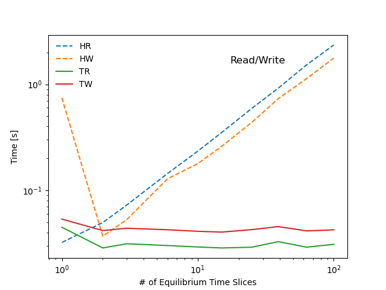
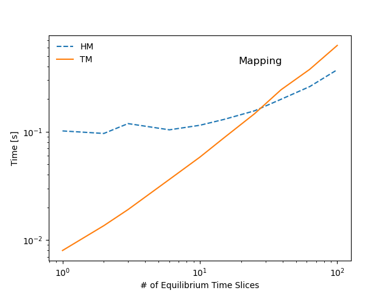
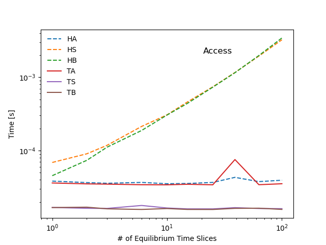

Note
Go to the end to download the full example code
Scaling IMAS performance¶
This example shows a scaling performance study for manipulating OMAS data in hierarchical or tensor format.
The hierarchical organization of the IMAS data structure can in some situations hinder IMAS’s ability to efficiently manipulate large data sets. This contrasts to the multidimensional arrays (ie. tensors) approach that is commonly used in computer science for high-performance numerical calculations.
Based on this observation OMAS implements a transformation that casts the data that is contained in the IMAS hierarchical structure as a list of tensors, by taking advantage of the homogeneity of grid sizes that is commonly found across arrays of structures. Such transformation and a summary of the scaling results are illustrated here for an hypothetical IDS that has data organized as a series of time-slices:
{kind=link}
The favorable scaling that is observed when representing IMAS data in tensor form makes a strong case for adopting it. Implementing the same system as part of the IMAS backend storage of data and in memory representation would likely greatly benefit IMAS performance in many real-world applications.
The new tensors representation would also greatly simplify the integration of IMAS with a broad range of tools and numerical libraries that are commonly used across many fields of science.
Finally, the addition of an extra dimension to the tensors could be used to efficiently store multiple realizations of signals from a distribution function of uncertain quantities. Such feature would enable support of uncertainty quantification workflows and Bayesian integrated data analyses within IMAS.
Scaling study in detail¶
OMAS can seamlessly use either hierarchical or tensor representations as the backend for storing data both in memory and on file, and transform from one format to the other. The mapping function is generic and can handle nested hierarchical list of structures (not only in time). Also OMAS can automatically determine which data can be collected across the hierarchical structure, which cannot, and seamlessly handle both at the same time.
The following diagram summarizes the tests performed in this scaling study. Benchmarks show that most operations stemming from the hierarchical representation of the data scale linearly with with the number of time-slices in the sample IDS (red markers in the diagram), whereas operations that make only use of the tensor representation show little to no dependency on the dataset size (green markers in the diagram). As a result the tensors representation can be several orders of magnitude faster than a hierarchical organization, even for datasets of modest size.
{kind=link}
Scaling plots and code used for the benchmark follow:
- 
- 
- 
1/100
2/100
3/100
6/100
10/100
15/100
25/100
39/100
63/100
100/100
[1, 2, 3, 6, 10, 15, 25, 39, 63, 100]
{'HA': [3.840923309326172e-05,
3.6644935607910154e-05,
3.586610158284505e-05,
3.683169682820638e-05,
3.536701202392578e-05,
3.562768300374349e-05,
3.68204116821289e-05,
4.32124504676232e-05,
3.77791268484933e-05,
3.947591781616211e-05],
'HB': [4.551410675048828e-05,
7.369518280029297e-05,
0.00011131763458251953,
0.00018808841705322265,
0.0003055095672607422,
0.00043919086456298826,
0.0007313966751098632,
0.001152777671813965,
0.0019762277603149413,
0.0034279108047485353],
'HM': [0.10179471969604492,
0.09644412994384766,
0.1189429759979248,
0.10418820381164551,
0.11478686332702637,
0.1300489902496338,
0.15611791610717773,
0.19957518577575684,
0.2612440586090088,
0.37410521507263184],
'HR': [0.032258033752441406,
0.04963517189025879,
0.07264828681945801,
0.1444091796875,
0.2344529628753662,
0.3516521453857422,
0.5942339897155762,
0.9189648628234863,
1.5230770111083984,
2.350512981414795],
'HS': [6.890296936035156e-05,
9.047985076904297e-05,
0.00011801719665527344,
0.00021350383758544922,
0.000307464599609375,
0.00045900344848632814,
0.0007398414611816406,
0.0011600225399702024,
0.001943478508601113,
0.0032400584220886233],
'HW': [0.7474367618560791,
0.036923885345458984,
0.052968740463256836,
0.12880396842956543,
0.17876720428466797,
0.26039600372314453,
0.4385509490966797,
0.7311568260192871,
1.1319160461425781,
1.767672061920166],
'TA': [3.6215782165527345e-05,
3.5202503204345704e-05,
3.493626912434896e-05,
3.4248828887939454e-05,
3.416776657104492e-05,
3.478686014811198e-05,
3.417205810546875e-05,
7.550716400146484e-05,
3.4297080267043345e-05,
3.534984588623047e-05],
'TB': [1.6736984252929688e-05,
1.6939640045166015e-05,
1.609325408935547e-05,
1.5779336293538412e-05,
1.6231536865234375e-05,
1.578648885091146e-05,
1.5760421752929687e-05,
1.6325559371556992e-05,
1.640509045313275e-05,
1.579904556274414e-05],
'TM': [0.007996797561645508,
0.013571023941040039,
0.019108057022094727,
0.0362849235534668,
0.058294057846069336,
0.08801484107971191,
0.1467587947845459,
0.24442791938781738,
0.3770318031311035,
0.6274182796478271],
'TR': [0.04487895965576172,
0.028640031814575195,
0.03135395050048828,
0.03014993667602539,
0.029243946075439453,
0.02862095832824707,
0.029103994369506836,
0.03283214569091797,
0.02911376953125,
0.030975818634033203],
'TS': [1.678466796875e-05,
1.6355514526367186e-05,
1.6291936238606773e-05,
1.786947250366211e-05,
1.6500949859619143e-05,
1.605987548828125e-05,
1.6051292419433593e-05,
1.6687466548039363e-05,
1.6254092019701758e-05,
1.6160011291503907e-05],
'TW': [0.053586721420288086,
0.0417628288269043,
0.043910980224609375,
0.04248809814453125,
0.04108905792236328,
0.04039883613586426,
0.042620182037353516,
0.045526981353759766,
0.04146981239318848,
0.04239177703857422]}
import os
import time
from omas import *
import numpy
from pprint import pprint
from matplotlib import pyplot
ods = ODS()
ods.sample_equilibrium()
max_n = 100
max_samples = 11
stats_reps = 10
samples = numpy.unique(list(map(int, numpy.logspace(0, numpy.log10(max_n), max_samples)))).tolist()
max_samples = len(samples)
times = {}
for type in ['H', 'T']: # hierarchical or tensor
for action in ['R', 'W', 'M', 'A', 'S', 'B']: # Read, Write, Mapping, Array access, Stripe access, Bulk access
times[type + action] = []
try:
__file__
except NameError:
import inspect
__file__ = inspect.getfile(lambda: None)
for n in samples:
print('%d/%d' % (n, samples[-1]))
# keep adding time slices to the data structure
for k in range(len(ods['equilibrium.time_slice']), n):
ods.sample_equilibrium(time_index=k)
# hierarchical write to HDF5
filename = omas_testdir(__file__) + '/tmp.h5'
t0 = time.time()
save_omas_h5(ods, filename)
times['HW'].append(time.time() - t0)
# hierarchical read from HDF5
t0 = time.time()
load_omas_h5(filename)
times['HR'].append(time.time() - t0)
# hierarchical access to individual array
t0 = time.time()
for k in range(stats_reps):
for kk in range(n):
ods['equilibrium.time_slice.%d.profiles_1d.psi' % kk]
times['HA'].append((time.time() - t0) / n / float(stats_reps))
# hierarchical slice across the data structure
t0 = time.time()
for kk in range(n):
ods['equilibrium.time_slice.:.profiles_1d.psi'][:, 0]
times['HS'].append((time.time() - t0) / n)
# hierarchical bulk access to data
t0 = time.time()
for k in range(stats_reps):
ods['equilibrium.time_slice.:.profiles_1d.psi']
times['HB'].append((time.time() - t0) / float(stats_reps))
# hierarchical mapping to tensor
t0 = time.time()
odx = ods_2_odx(ods)
times['HM'].append(time.time() - t0)
filename = omas_testdir(__file__) + '/tmp.ds'
# tensor write to HDF5
t0 = time.time()
save_omas_dx(odx, filename)
times['TW'].append(time.time() - t0)
# tensor read from HDF5
t0 = time.time()
odx = load_omas_dx(filename)
times['TR'].append(time.time() - t0)
# tensor mapping to hierarchical
t0 = time.time()
ods = odx_2_ods(odx)
times['TM'].append(time.time() - t0)
# tensor access to individual array
t0 = time.time()
for k in range(stats_reps):
for kk in range(n):
odx['equilibrium.time_slice.%d.profiles_1d.psi' % kk]
times['TA'].append((time.time() - t0) / n / float(stats_reps))
# tensor slice across the data structure
t0 = time.time()
for k in range(stats_reps):
for kk in range(n):
odx['equilibrium.time_slice.:.profiles_1d.psi'][:, 0]
times['TS'].append((time.time() - t0) / n / float(stats_reps))
# tensor bulk access to data
t0 = time.time()
for k in range(stats_reps):
for kk in range(n):
odx['equilibrium.time_slice.:.profiles_1d.psi']
times['TB'].append((time.time() - t0) / n / float(stats_reps))
# print numbers to screen
print(samples)
pprint(times)
# plot read/write scaling
pyplot.figure()
for type in ['H', 'T']: # hierarchical or tensor
for action in ['R', 'W']: # Read, Write
pyplot.loglog(samples, times[type + action], label=type + action, lw=1.5, ls=['-', '--']['H' in type])
pyplot.xlabel('# of Equilibrium Time Slices')
pyplot.ylabel('Time [s]')
pyplot.legend(loc='upper left', frameon=False)
pyplot.title('Read/Write', y=0.85, x=0.7)
# plot mapping scaling
pyplot.figure()
for type in ['H', 'T']: # hierarchical or tensor
for action in ['M']: # Mapping
pyplot.loglog(samples, times[type + action], label=type + action, lw=1.5, ls=['-', '--']['H' in type])
pyplot.xlabel('# of Equilibrium Time Slices')
pyplot.ylabel('Time [s]')
pyplot.legend(loc='upper left', frameon=False)
pyplot.title('Mapping', y=0.85, x=0.7)
# plot access scaling
pyplot.figure()
for type in ['H', 'T']: # hierarchical or tensor
for action in ['A', 'S', 'B']: # Array access, Stripe access, Bulk access
pyplot.loglog(samples, times[type + action], label=type + action, lw=1.5, ls=['-', '--']['H' in type])
pyplot.xlabel('# of Equilibrium Time Slices')
pyplot.ylabel('Time [s]')
pyplot.legend(loc='upper left', frameon=False)
pyplot.title('Access', y=0.85, x=0.7)
pyplot.show()